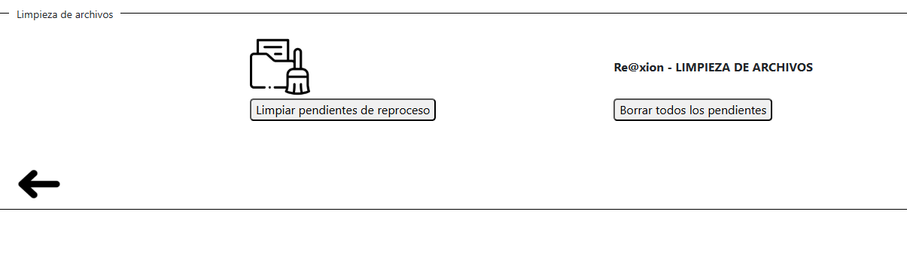
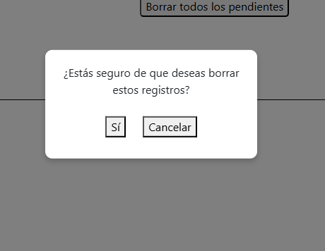

Módulo del Sistema
Limpiar archivos pendientes de reprocesar.
- Versión: LadyApi001
- Fecha de actualización: 20/05/2025
- Propósito: El modulo “Limpiar archivos pendientes de reprocesar” tiene como objetivo mantener el sistema limpio y ordenado, eliminando archivos CSV y registros asociados que quedaron pendientes de reprocesar.
Descripción General
Qué hace el botón de limpiar pendientes de reproceso?
Cuando ingresamos al módulo "Procesar datos”, el sistema carga automáticamente los archivos CSV que se encuentran en el directorio, listos para ser procesados. Una vez que el usuario oprime el botón "Procesar”, comienza la carga de los datos en el sistema.
Si ocurre algún error durante el procesamiento, por ejemplo: un código de cliente que no existe en el sistema, un código de articulo inválido, cuando no haya un domicilio de entrega para el cliente, etc. el sistema no procesara esa fila.
Cuando suceden errores de ese estilo, el sistema detecta esos archivos que no fueron procesados por alguna razón y los carga en el módulo de "reprocesar rechazados” para que vuelva procesar esos archivos si lo desea.
El botón limpiar pendientes de reproceso permite eliminar de forma permanente los archivos que no fueron procesados por alguna razón, es decir, los que se encuentran en el módulo de "reprocesar rechazados”.
Si el usuario desea borra estos archivos, debe dirigirse al módulo "Limpiar pendientes de reprocesar" y hacer click en el botón "limpiar pendientes de reproceso". De esta manera, se eliminan definitivamente del sistema.
Esta acción no se puede deshacer. Se recomienda utilizarla solo cuando se esté seguro de que los archivos pendientes no serán corregidos ni reprocesados
¿Qué hace el botón borrar todos los pendientes?
Este botón permite borrar pendientes de reproceso con el fin de facilitar las operaciones diarias de procesos de archivos CSV.
De este modo, si el usuario ingresa al módulo de “Procesar datos” y detecta que se cargaron archivos CSV que no deberían estar, podría dirigirse fácilmente a este módulo para borrar todos los pendientes y corregir ese error que puede ser habitual para el operador.
Este módulo brinda mayor orden y control sobre los archivos que realmente están disponibles para ser procesados nuevamente. Además, ayuda a los usuarios a trabajar con un entorno actualizado, limpio y libre de errores
En conclusión, este nuevo módulo sirve para:
- Elminar archivos y registros que ya no son válidos: limpia la base de datos y el sistema de archivos CSV pendientes.
- Evitar confusiones o reprocesamiento innecesario.
- Facilitar el trabajo del operador, permitiendo realizar una limpieza rápida y segura ante errores comunes en la carga de archivos CSV.
- Mejora la precisión del módulo de procesar datos y reprocesar rechazados, asegurando que solo trabaje con los archivos correctos que el usuario desea.
Pantalla principal
La pantalla principal consta de dos botones que son “Limpiar pendientes de reproceso” y “Borrar todos los pendientes”. Al entrar, usted observara una pantalla así:

Al presionar cualquiera de los botones, aparecerá en pantalla una alerta como el que ve abajo. El mensaje incluirá dos opciones: “Sí” y “No”. Luego, al seleccionar el botón “si”, se realizara la operación de borrado por lo que debe de estar seguro de presionar el botón. Si el usuario selecciona “No”, la operación será cancelada y no se realizará ningún cambio. Esta alerta tiene como objetivo evitar eliminaciones accidentales, ya que una vez realizada no podrá deshacerse.

IMPORTANTE: Recuerde de tener correctamente configurada la base de datos en el módulo de “Configuración de directorio” para evitar problemas futuros.